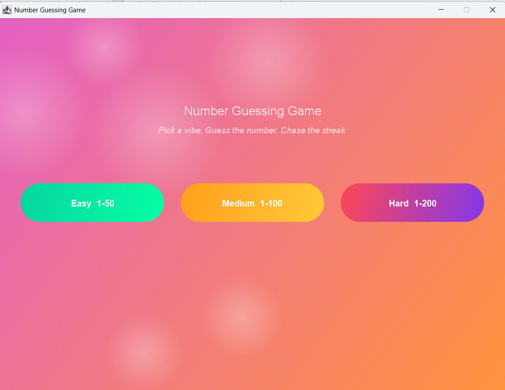
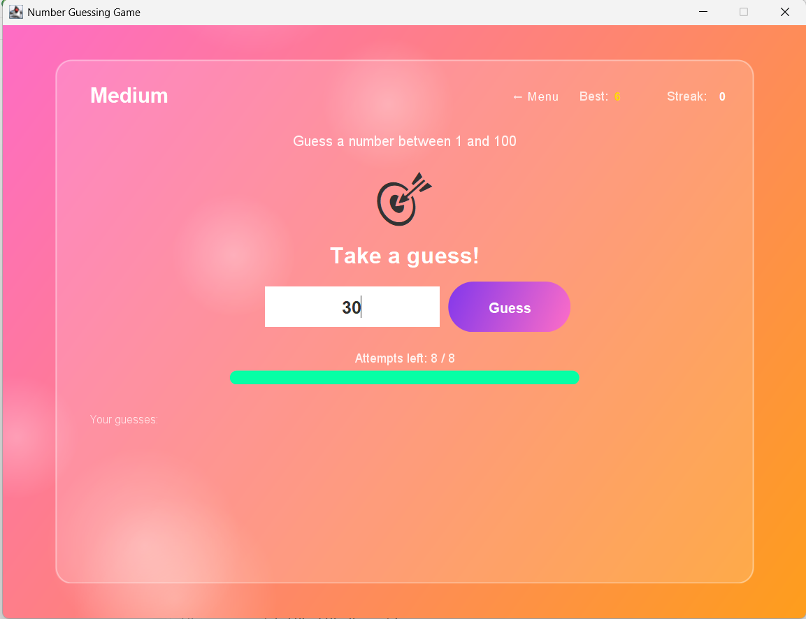
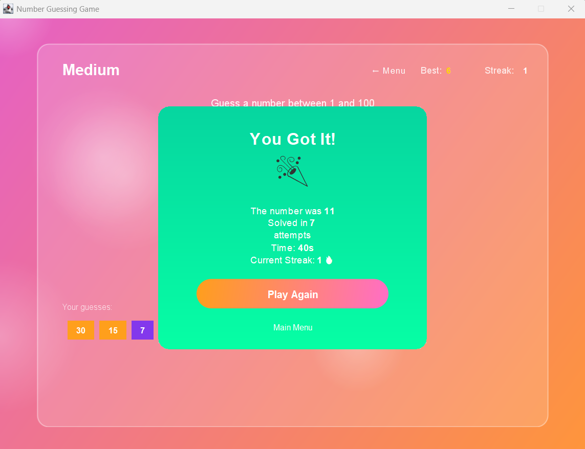

Case Study 02
Number Guessing Game
A Java Swing game created during my Java internship, with difficulty levels and temperature-based feedback.
How it works
The program generates a target number and lets the player make guesses. Instead of only saying that a guess is high or low, the game gives feedback such as Freezing, Cold, Cool, Warm, Hot and On Fire based on closeness.
Features
- Java Swing desktop interface
- Multiple difficulty levels
- Temperature-style feedback
- Closeness calculation
- Restart/new game flow
What I learned
I practiced GUI event handling, conditions, random number generation, methods and organizing a small Java application into understandable components.
Project screenshots


